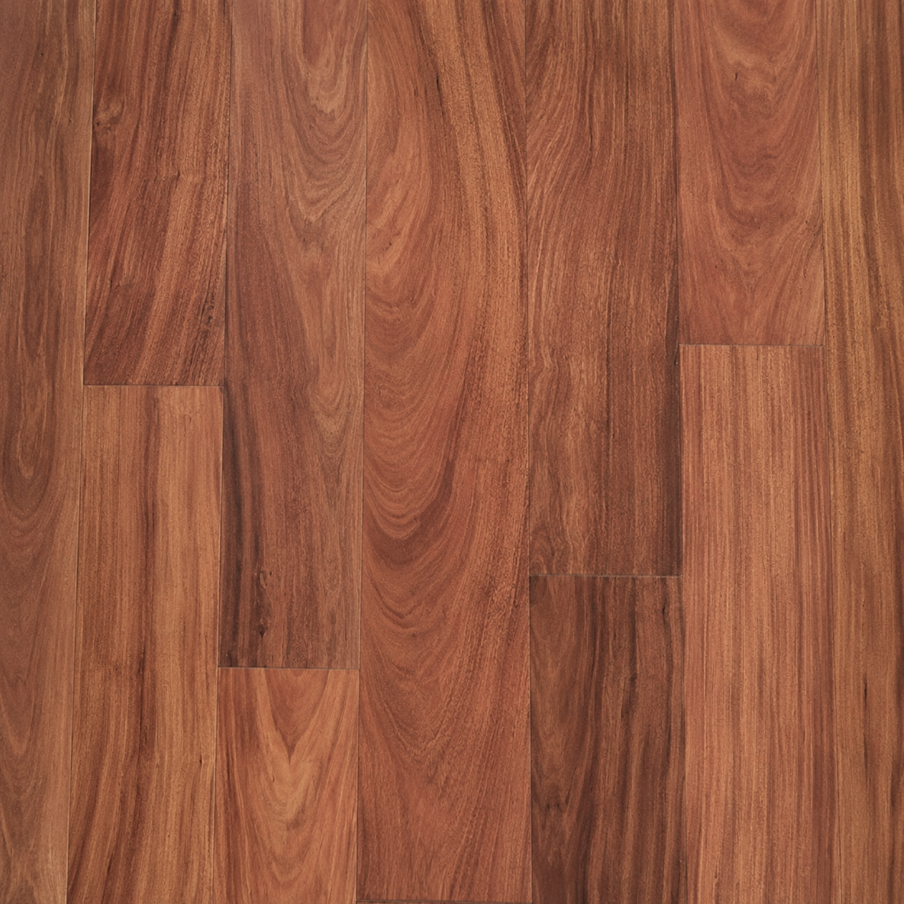

Estoraque
Madera tropical de alta densidad y resistencia natural. Ideal para decking, estructuras exteriores y revestimientos.

Características del Estoraque.
El estoraque es una madera tropical peruana de dureza excepcional y notable resistencia a la humedad, hongos e insectos. Su alta estabilidad dimensional la convierte en una de las opciones más confiables para aplicaciones en exteriores, incluyendo decking, muelles, estructuras expuestas y obras civiles de alta exigencia.
El estoraque es una de las maderas tropicales de mayor densidad y resistencia natural disponibles en el mercado peruano. Su nombre es reconocido entre constructores, ingenieros y proyectistas como sinónimo de durabilidad comprobada en condiciones de exposición severa.
Características técnicas
Con una densidad que supera los 900 kg/m³ en promedio, el estoraque se clasifica dentro de las maderas muy duras. Su contracción volumétrica es baja, lo que le otorga alta estabilidad dimensional ante cambios de humedad y temperatura, característica clave para aplicaciones a la intemperie en climas costeros o de selva.
Resistencia natural
El estoraque posee una resistencia biológica de clase I, lo que significa alta durabilidad natural frente a hongos de pudrición, xilófagos y termitas, sin necesidad de tratamientos preservantes intensivos. Esta propiedad reduce los costos de mantenimiento a largo plazo y amplía su vida útil en obra.
Aplicaciones principales
- Decking y pisos de exterior en terrazas y jardines
- Muelles, plataformas y estructuras sobre agua
- Vigas, columnas y entramados estructurales
- Revestimientos exteriores y fachadas ventiladas
- Obras civiles, puentes peatonales y vías de madera
Apariencia
Presenta tonos que van del marrón rojizo al marrón oscuro uniforme, con veta recta a ligeramente entrelazada. Su superficie, al cepillado fino, adquiere un brillo natural que puede potenciarse con aceites o dejarse sin tratar en uso industrial.
Disponibilidad
La Isla Trading comercializa estoraque en tablas, vigas y piezas dimensionadas para proyectos en Lima Metropolitana y para exportación. Consulte stock disponible, medidas estándar y condiciones de entrega.
Todas las especies que trabajamos.
Comercializamos especies de madera dura nativa del Perú. Cada una con propiedades específicas para distintos productos y aplicaciones.
Estoraque en nuestros productos.
Esta especie se ofrece en distintas líneas según su densidad y características técnicas.
¿Buscas Estoraque?
Cuéntanos qué formato y volumen necesitas. Te enviamos cotización a la brevedad.